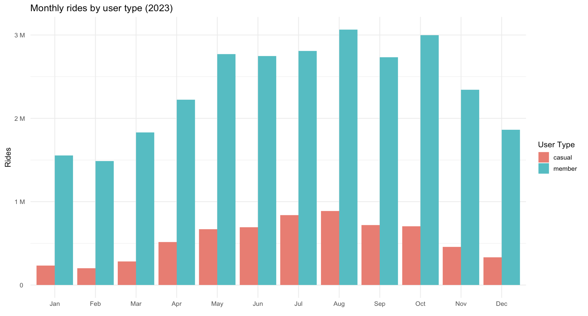
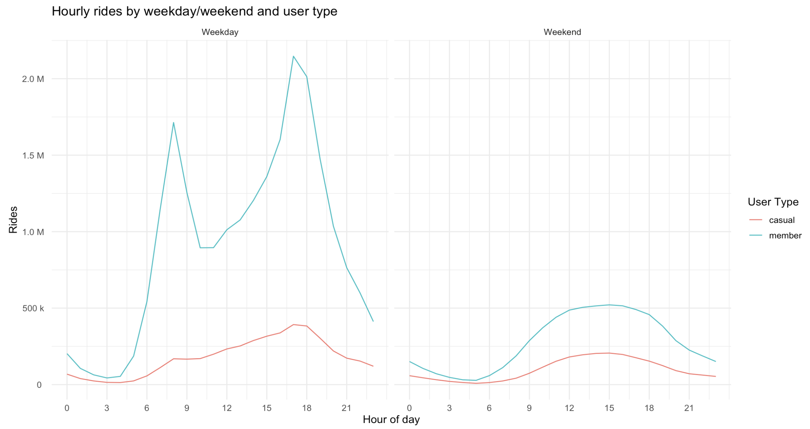
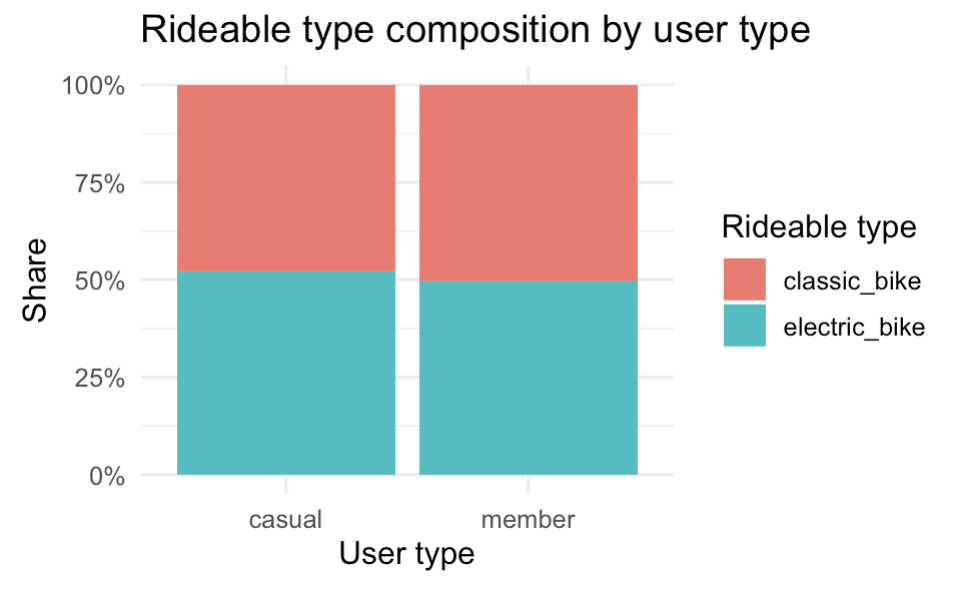
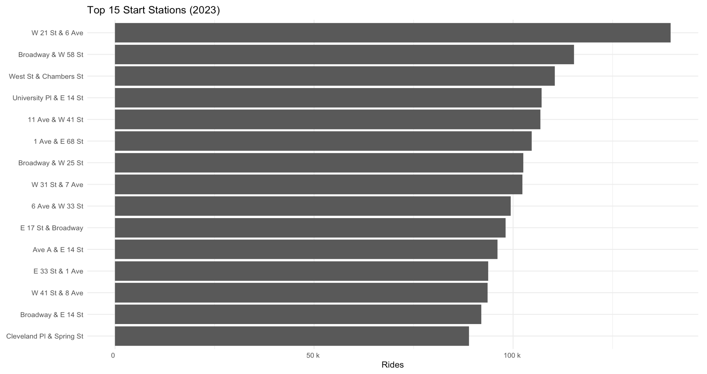
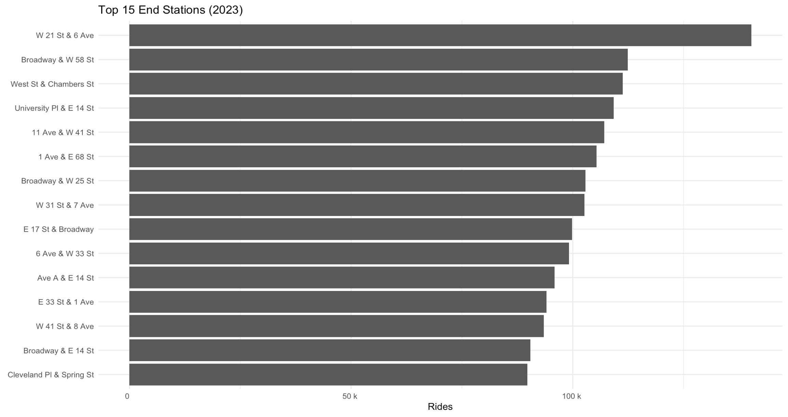
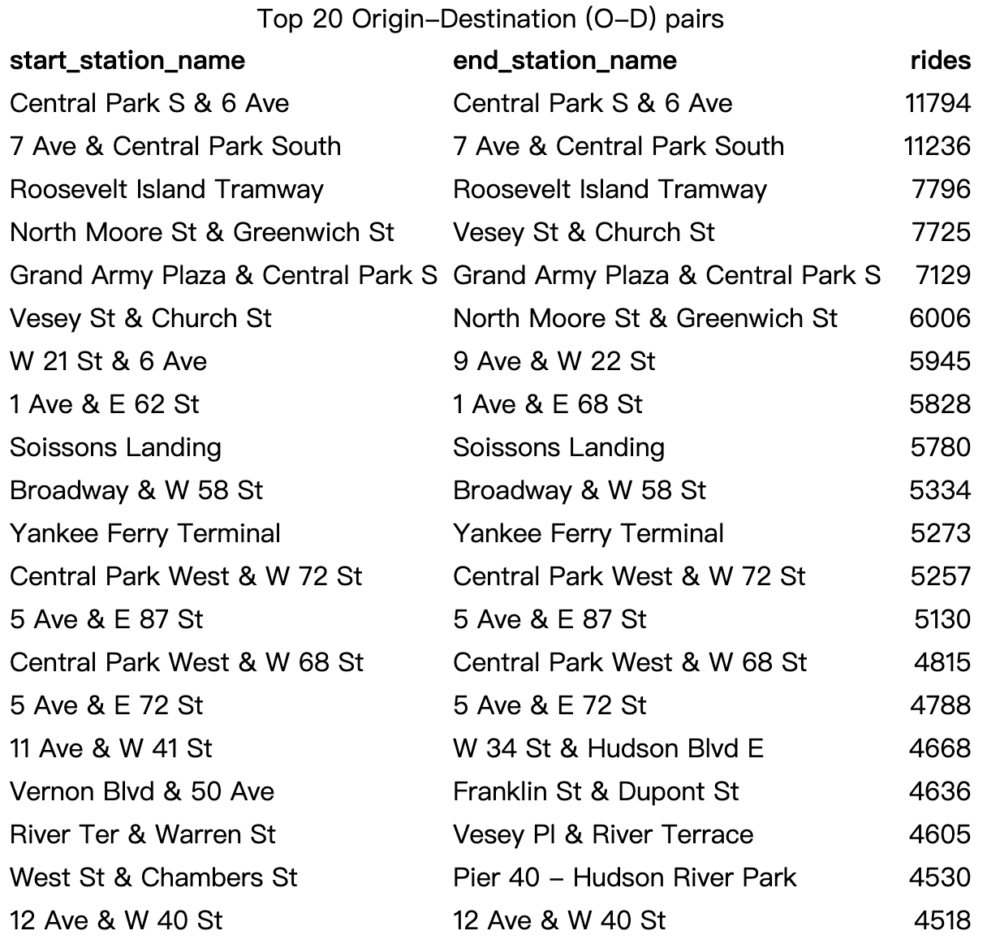

User Patterns
Users Patterns Overview
This section analyzes how different user types (member
vs. casual) behave when using CitiBike.
We investigate data ingestion, cleaning, exploratory summaries, seasonal
trends, hourly usage, and station-level hotspots.
Data Import and Assembly
Load packages
knitr::opts_chunk$set(
echo = TRUE, message = FALSE, warning = FALSE, fig.width = 8, fig.height = 5
)
suppressPackageStartupMessages({
library(tidyverse)
library(lubridate)
library(scales)
library(glue)
library(knitr)
library(readr)
library(purrr)
library(dplyr)
})Dataset source: https://citibikenyc.com/system-data
Columns include:
ride_id, rideable_type,
started_at, ended_at, station names/IDs,
coordinates, and membership status.
Data Cleaning
Prepare output paths
RAW_DIR <- params$raw_dir
OUT_DIR <- params$out_dir
OUT_FILE <- file.path(OUT_DIR, params$out_file)
dir.create(OUT_DIR, showWarnings = FALSE, recursive = TRUE)Column specification and reading
col_spec <- cols(
ride_id = col_character(),
rideable_type = col_character(),
started_at = col_character(),
ended_at = col_character(),
start_station_name = col_character(),
start_station_id = col_character(),
end_station_name = col_character(),
end_station_id = col_character(),
start_lat = col_double(),
start_lng = col_double(),
end_lat = col_double(),
end_lng = col_double(),
member_casual = col_character()
)
file_list <- list.files(RAW_DIR, pattern = "\\.csv$", full.names = TRUE)
stopifnot(length(file_list) > 0)
citibike_raw <- file_list %>%
map(~ read_csv(.x, col_types = col_spec, progress = TRUE)) %>%
bind_rows()Clean and keep 2023 only
citibike_clean <- citibike_raw %>%
mutate(
started_at = ymd_hms(started_at, quiet = TRUE),
ended_at = ymd_hms(ended_at, quiet = TRUE),
duration_min = as.numeric(difftime(ended_at, started_at, units = "mins")),
duration_hr = duration_min / 60,
date = as_date(started_at),
month_lab = factor(month(started_at, label = TRUE, abbr = TRUE),
levels = month.abb, ordered = TRUE),
wday_lab = factor(wday(started_at, label = TRUE, abbr = TRUE),
levels = c("Sun","Mon","Tue","Wed","Thu","Fri","Sat"), ordered = TRUE),
hour = hour(started_at),
member_casual = tolower(member_casual)
) %>%
filter(
duration_min >= 1,
duration_min <= 360,
!is.na(start_station_name),
!is.na(end_station_name)
) %>%
distinct(ride_id, .keep_all = TRUE)
# Save cleaned file
readr::write_csv(citibike_clean, OUT_FILE)Exploratory Data Analysis
Monthly Rides by User Type
rides_by_month_user <- citibike_clean %>%
count(month_lab, member_casual, name = "rides") %>%
mutate(month_lab = factor(month_lab, levels = month.abb, ordered = TRUE))
ggplot(rides_by_month_user,
aes(x = month_lab, y = rides, fill = member_casual)) +
geom_col(position = "dodge") +
scale_y_continuous(labels = label_number(scale_cut = cut_si(" "))) +
labs(
title = "Monthly rides by user type (2023)",
x = NULL, y = "Rides", fill = "User Type"
) +
theme_minimal(base_size = 12)
Seasonal variation is strong:
- Usage rises sharply from spring to summer (Apr–Sep), peaking in
July/August.
- Member rides dominate year-round, reflecting commuter behavior.
- Casual riders show strong seasonality tied to weather and tourism.
Weekday vs Weekend & Hourly Pattern
rides_by_wday_hour <- citibike_clean %>%
mutate(is_weekend = wday_lab %in% c("Sat","Sun")) %>%
mutate(is_weekend = factor(is_weekend, levels = c(FALSE, TRUE), labels = c("Weekday","Weekend"))) %>%
count(is_weekend, hour, member_casual, name = "rides")
ggplot(rides_by_wday_hour,
aes(x = hour, y = rides, color = member_casual, group = member_casual)) +
geom_line() +
facet_wrap(~ is_weekend) +
scale_y_continuous(labels = label_number(scale_cut = cut_si(" "))) +
scale_x_continuous(breaks = seq(0, 23, 3)) +
labs(
title = "Hourly rides by weekday/weekend and user type",
x = "Hour of day", y = "Rides", color = "User Type"
) +
theme_minimal(base_size = 12)
- Weekdays show strong commuter peaks at 8 AM & 6
PM.
- Weekends show smoother all-day activity, with casual riders
dominating afternoon hours.
- Night rides (12–4 AM) tend to have longer durations.
Rideable Type Mix
rideable_mix <- citibike_clean %>%
count(rideable_type, member_casual, name = "rides") %>%
group_by(member_casual) %>%
mutate(pct = rides / sum(rides)) %>%
ungroup()
ggplot(rideable_mix, aes(x = member_casual, y = pct, fill = rideable_type)) +
geom_col(position = "fill") +
scale_y_continuous(labels = percent_format()) +
labs(
title = "Rideable type composition by user type",
x = "User type", y = "Share", fill = "Rideable type"
) +
theme_minimal(base_size = 12)
Bike-type preference is nearly identical across user groups.
Both members and casual riders use electric and classic bikes in similar
proportions.
Station Hotspots
Top 15 Start & End Stations
top_start <- citibike_clean %>%
count(start_station_name, sort = TRUE, name = "rides") %>%
slice_head(n = 15)
top_end <- citibike_clean %>%
count(end_station_name, sort = TRUE, name = "rides") %>%
slice_head(n = 15)
kable(top_start, caption = "Top 15 start stations (by rides)")
kable(top_end, caption = "Top 15 end stations (by rides)")Bar Charts
ggplot(top_start, aes(x = reorder(start_station_name, rides), y = rides)) +
geom_col() +
coord_flip() +
scale_y_continuous(labels = label_number(scale_cut = cut_si(" "))) +
labs(title = "Top 15 Start Stations (2023)", x = NULL, y = "Rides") +
theme_minimal(base_size = 11)
ggplot(top_end, aes(x = reorder(end_station_name, rides), y = rides)) +
geom_col() +
coord_flip() +
scale_y_continuous(labels = label_number(scale_cut = cut_si(" "))) +
labs(title = "Top 15 End Stations (2023)", x = NULL, y = "Rides") +
theme_minimal(base_size = 11)
Most Common O–D Pairs
top_od <- citibike_clean %>%
count(start_station_name, end_station_name, sort = TRUE, name = "rides") %>%
filter(!is.na(start_station_name), !is.na(end_station_name)) %>%
slice_head(n = 20)
kable(top_od, caption = "Top 20 Origin-Destination (O-D) pairs")
- High-volume O–D trips cluster around Central Park,
Hudson River Park, and Midtown.
- Many are loops, indicating sightseeing and
recreational riding.
- Others reflect short-distance commuting in Financial District and
Hudson Yards.
- Understanding these patterns guides station rebalancing and capacity planning.